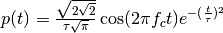
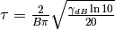
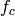
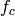

Generation of an Impulse of normalized energy¶
One possible manner to define an ernergy normalized short UWB impulse is as follows.


where  is the desired bandwidth defined at
is the desired bandwidth defined at
 below the spectrum maximum and  is
the central frequency of the pulse.
below the spectrum maximum and  is
the central frequency of the pulse.
This waveform is a gaussian windowing of a sine wave of frequency
. The normalization term depends on the exponential scaling
factor  .
.
TUsignal
--------
shx : (343,)
shy : (343,)
dx : 0.01
xmin : -1.71
xmax : 1.71
ymin : -1.89545539648
ymax : 2.16154131873
Verification of energy normalization in both domains¶
Integration in time 1.0
Integration in frequency domain 1.0
Calcul of UWB channel impulse response¶
tw : 30.0
band : 4.0
fc : 4.493
thresh : 3.0
fe : 50.0
Np : 1500.0
te : 0.02
type : file
Here the time domain waveform is measured and the anticausal part of the signal is artificially set to 0.
To handle properly the time domain wavefom it is required to center the signal in the middle of the array.
st stands for signal in time domain
Ploting the waveform¶

in frequency domain¶
The frequency domain version of the signal is embedded in the same object.
sf stands for signal in frequency domain.

Construction of the propagation channel¶
The link between Txid = 1 and Rxid =1 is simply loaded as
nray : 500
nfreq : 181
nb rays in .tauk file: 500
nb rays 2: 500
The following representation shows the spatial spreading of the propagation channel. On the left are scattered the intensity of rays wrt to angles of departure (in azimut and elevation). On the right is the intensity of rays wrt to angles of arrival. It misses the application between the 2 planes as well as the delay dimension of the propagation channel.

Construction of the transmission channel¶
The transmission channel is obtain from the combianation of the propagation channel and the vector antenna pattern at bot side of the radio link
The ScalChannel object contains all the information about the ray transfer functions. The transmission channel is obtained by applying a vector radiation pattern using an antenna file. In the presented case, it comes from a real antenna which has been used during the FP7 WHERE1 measurement campaign M1.
defant.vsh3
type : vsh3
--------------------------
fmin (GHz) : 2.0
fmax (GHz) : 8.0
Nf : 121
Br
-------------
Nf : 121
fmin (GHz) : 2.0
fmax (GHz) : 8.0
Ncoeff s3 : 18
Bi
-------------
Nf : 121
fmin (GHz) : 2.0
fmax (GHz) : 8.0
Ncoeff s3 : 18
Cr
-------------
Nf : 121
fmin (GHz) : 2.0
fmax (GHz) : 8.0
Ncoeff s3 : 18
Ci
-------------
Nf : 121
fmin (GHz) : 2.0
fmax (GHz) : 8.0
Ncoeff s3 : 18

The antenna can also been taken into account
(<matplotlib.figure.Figure at 0xb1c9b2c>,
array([Axes(0.125,0.547727;0.775x0.352273),
Axes(0.125,0.125;0.775x0.352273)], dtype=object))

Calculate UWB Channel Impulse Response¶